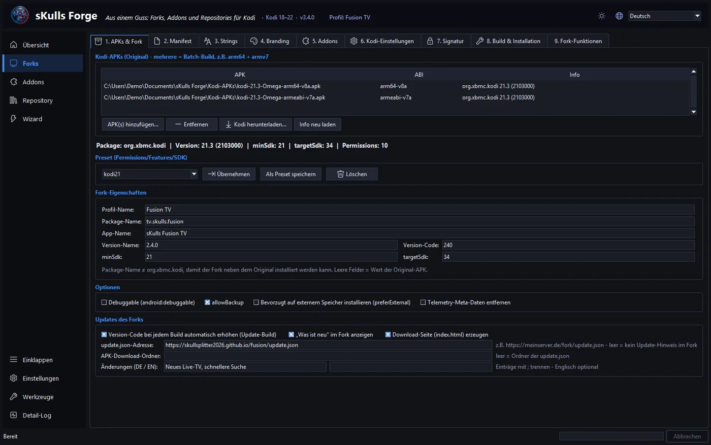
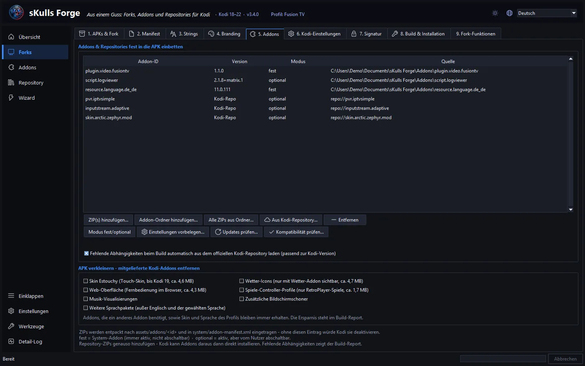
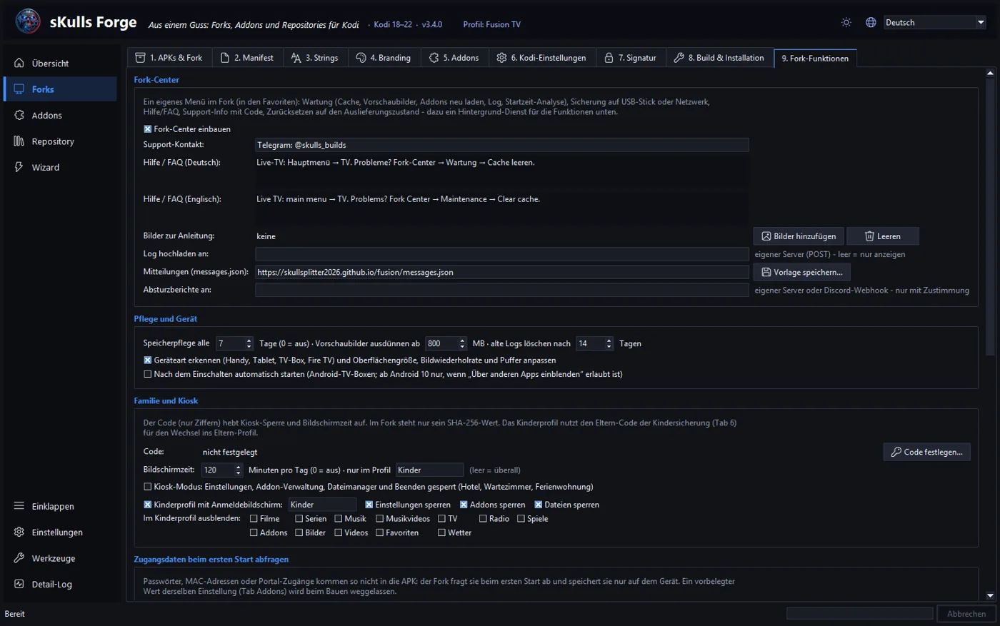
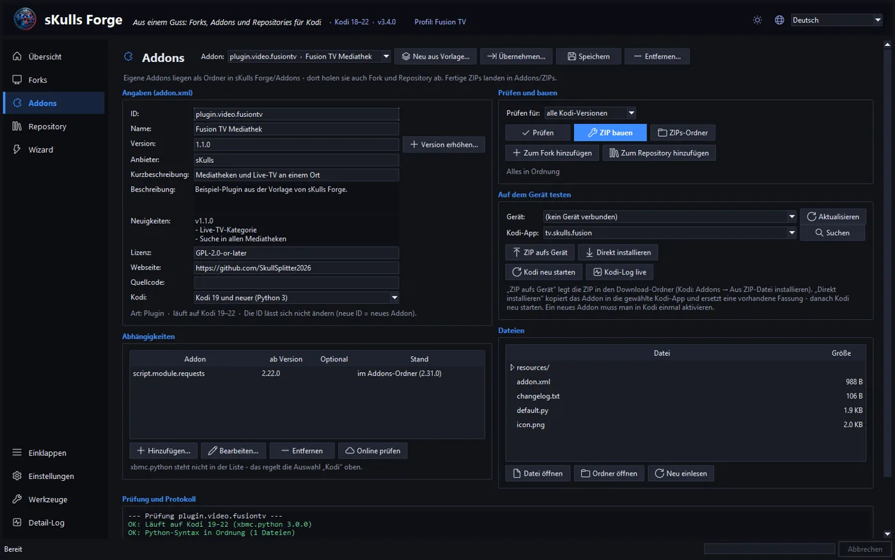
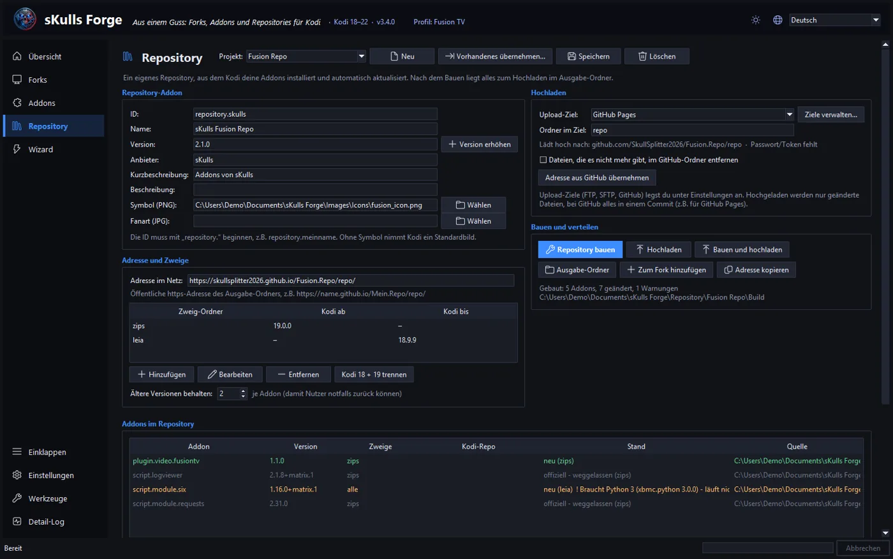
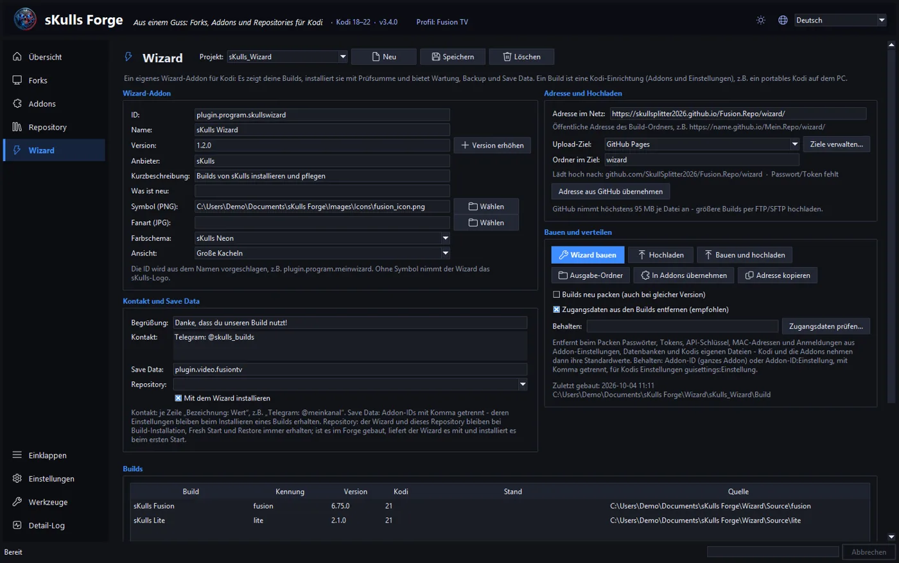
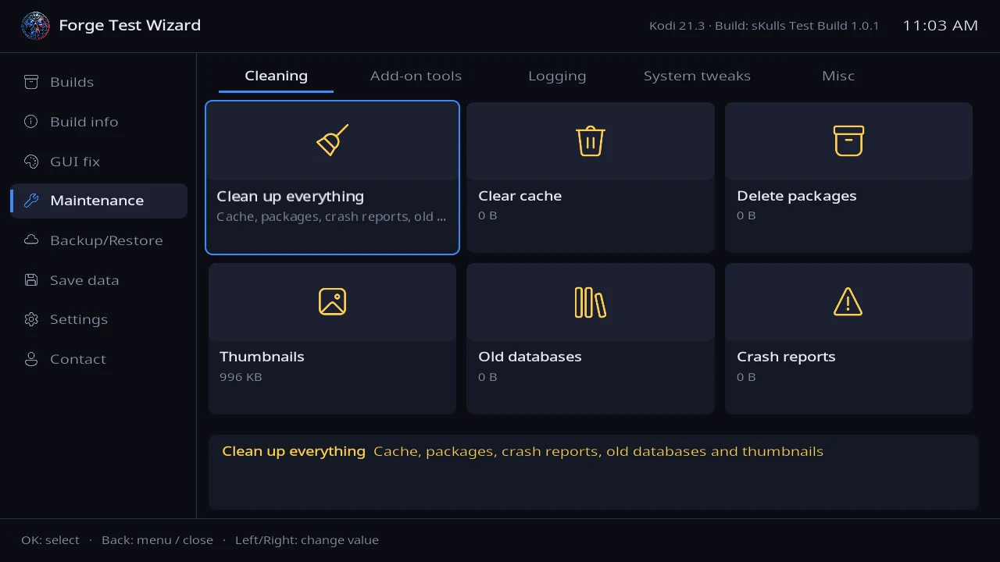
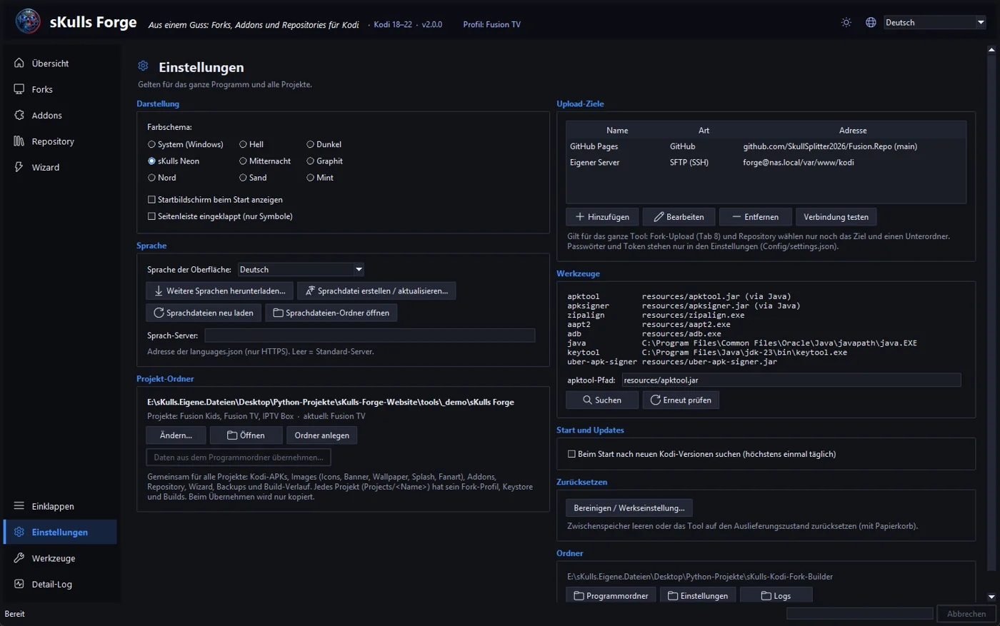
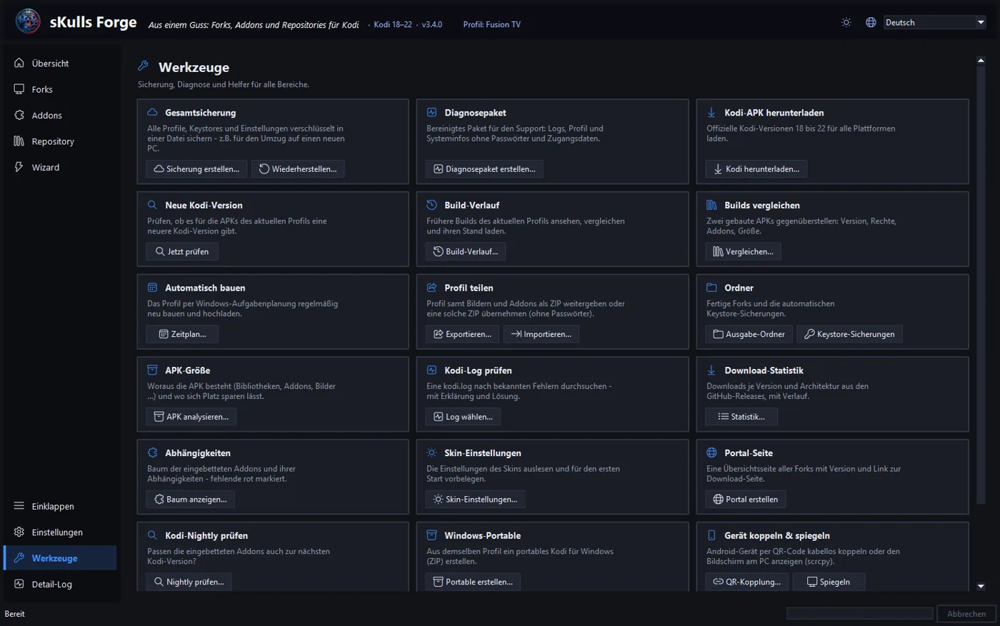

Anleitung
Guide
Alles Schritt für Schritt: vom ersten eigenen Kodi-Fork über eigene Addons und ein Repository bis zum Wizard, der deine Builds verteilt. Die Bilder passen sich Sprache und Farbschema an – ein Klick zeigt sie groß.
Everything step by step: from your first own Kodi fork to your own add-ons and a repository, up to the wizard that distributes your builds. The pictures follow language and color scheme – a click shows them large.
In zehn Minuten zum ersten Fork
Your first fork in ten minutes
sKulls Forge läuft unter Windows. Das Setup installiert das fertig übersetzte Tool samt Java (kein Python nötig) – oder entpackt auf Wunsch eine portable Version (z.B. auf einen USB-Stick), die ihre Daten im eigenen Ordner behält.
sKulls Forge runs on Windows. The setup installs the compiled tool including Java (no Python needed) – or, if you like, unpacks a portable version (e.g. onto a USB stick) that keeps its data in its own folder.
- Projekt-Ordner wählen. Beim ersten Start fragt der Forge, wo Profile, Builds, Addons und Wizards liegen sollen (Standard: Dokumente\sKulls Forge).
- Choose the project folder. On first start the Forge asks where profiles, builds, add-ons and wizards should live (default: Documents\sKulls Forge).
- Kodi-APK holen. Extras → Kodi-APK herunterladen lädt die offizielle APK passend zur Gerätearchitektur (arm64, armv7, x86).
- Get the Kodi APK. Extras → Download Kodi APK fetches the official APK for your device architecture (arm64, armv7, x86).
- Neuer Fork. Datei → Assistent: neuer Fork fragt Name, App-Name und Paketname ab – der Paketname macht den Fork zu einer eigenen App neben dem normalen Kodi.
- New fork. File → Wizard: new fork asks for name, app name and package name – the package name turns the fork into its own app next to regular Kodi.
- Anpassen. Symbol und Startbild (Branding), Addons einbetten, Sprache und Einstellungen vorgeben – alles optional.
- Customize. Icon and splash (branding), embed add-ons, set language and settings – all optional.
- Bauen. FORK BUILD baut, signiert und prüft die APK. Beim ersten Mal legt der Forge einen Signatur-Schlüssel an – gut aufheben: Updates lassen sich nur mit demselben Schlüssel installieren.
- Build. FORK BUILD builds, signs and checks the APK. The first time the Forge creates a signing key – keep it safe: updates can only be installed with the same key.
- Installieren. Gerät per USB oder WLAN (ADB) verbinden und Letzte APK installieren – oder die APK über die Download-Seite verteilen.
- Install. Connect a device via USB or Wi-Fi (ADB) and Install last APK – or distribute the APK through the download page.

Einen Kodi-Fork bauen
Building a Kodi fork
Ein Fork ist eine Kodi-App mit eigenem Namen, Symbol und vorbereiteter Einrichtung. Die Arbeit ist auf Reiter verteilt – du füllst nur aus, was du brauchst.
A fork is a Kodi app with its own name, icon and prepared setup. The work is split into tabs – you only fill in what you need.

Addons einbetten
Embedding add-ons
Eingebettete Addons sind ab dem ersten Start da. Aus Kodi-Repository lädt Addons passend zur Kodi-Version und CPU – auch PVR-Clients und inputstream.adaptive. Steht ein Repository-ZIP in der Liste, durchsucht Aus Fremd-Repository dessen Addons genauso. Fehlende Abhängigkeiten holt der Build selbst.
Embedded add-ons are there from the first start. From Kodi repository loads add-ons matching the Kodi version and CPU – including PVR clients and inputstream.adaptive. If a repository ZIP is in the list, From third-party repository browses its add-ons the same way. The build fetches missing dependencies itself.

Sprachen
Languages
Wähle im Reiter Kodi-Einstellungen die Startsprache und unter Weitere Sprachen alles, was im Fork umschaltbar sein soll. Fehlende Sprachpakete lädt der Build aus dem offiziellen Kodi-Repository.
In the Kodi settings tab choose the start language and under Extra languages everything that should be switchable in the fork. The build loads missing language packs from the official Kodi repository.
Updates des Forks
Fork updates
Mit einer update.json-Adresse meldet der Fork neue Versionen selbst – auf Wunsch lädt er die APK und öffnet den Android-Installer. Ersatz-Server (Fork-Funktionen → App und Updates) sind Kopien von update.json und APKs: fällt der Haupt-Server aus, nimmt der Fork den nächsten. Nur HTTPS.
With an update.json address the fork announces new versions itself – optionally it downloads the APK and opens the Android installer. Mirror servers (Fork features → App and updates) are copies of update.json and APKs: if the main server is down, the fork takes the next one. HTTPS only.
Fork-Center und Einrichtungsassistent
Fork Center and setup assistant
Das Fork-Center ist ein eigenes Menü im Fork (in den Favoriten): Wartung, Sicherung auf USB oder Netzwerk, Hilfe, Support-Code und Zurücksetzen. Dazu kommen Bildschirmzeit, Kiosk-Modus, Kinderprofil und Mitteilungen an deine Nutzer.
The Fork Center is a menu of its own in the fork (in the favourites): maintenance, backup to USB or network, help, support code and reset. On top come screen time, kiosk mode, a kids profile and messages to your users.

Einrichtungsassistent beim ersten Start
Setup assistant on first start
Wähle die Schritte: Sprache, Region, Wetter-Ort, M3U-Adresse (z.B. für IPTV Simple) und Kindersicherungs-Code. Der Fork fragt sie beim ersten Start ab; „Später“ ist möglich und im Fork-Center lässt sich der Assistent jederzeit wieder starten.
Pick the steps: language, region, weather location, M3U address (e.g. for IPTV Simple) and parental lock code. The fork asks for them on first start; "Later" is possible and the assistant can be started again any time in the Fork Center.
Zugangsdaten (Passwörter, MAC-Adressen) gehören nicht in die APK: unter „Zugangsdaten beim ersten Start abfragen“ fragt der Fork sie ab und speichert sie nur auf dem Gerät.
Credentials (passwords, MAC addresses) do not belong in the APK: under "Ask for credentials on first start" the fork asks for them and stores them only on the device.
Eigene Addons
Your own add-ons
Neue Addons entstehen aus Vorlagen (Plugin, Script, Dienst, Kontextmenü …). Die Seite hat vier Reiter:
New add-ons start from templates (plugin, script, service, context menu …). The page has four tabs:

Ein eigenes Repository
Your own repository
Aus deinem Repository installiert Kodi deine Addons und hält sie aktuell. Reiter: Repository-Addon (Name, Symbol), Addons (was hinein soll), Adresse und Zweige (getrennte Ordner für ältere Kodi-Versionen) und Verteilen (bauen, hochladen per FTP, SFTP oder GitHub Pages).
Kodi installs your add-ons from your repository and keeps them up to date. Tabs: Repository add-on (name, icon), Add-ons (what goes in), Address and branches (separate folders for older Kodi versions) and Publish (build, upload via FTP, SFTP or GitHub Pages).

Online prüfen lädt nach dem Hochladen die addons.xml.md5 jedes Zweigs und prüft jedes Addon-ZIP an der öffentlichen Adresse – so fällt ein vergessener oder halber Upload sofort auf.
Check online loads the addons.xml.md5 of every branch after uploading and checks every add-on ZIP at the public address – a forgotten or partial upload shows up right away.
Builds verteilen mit dem eigenen Wizard
Distributing builds with your own wizard
Ein Build ist eine fertig eingerichtete Kodi-Installation – z.B. ein portables Kodi auf dem PC. Der Forge packt sie (ohne Cache, Vorschaubilder und Zugangsdaten) und baut dazu ein Wizard-Addon, das deine Builds anzeigt und installiert.
A build is a fully set-up Kodi installation – e.g. a portable Kodi on your PC. The Forge packs it (without cache, thumbnails and credentials) and builds a wizard add-on that shows and installs your builds.

Alles veröffentlichen
Publish everything
Ein Knopf für alles: Repository bauen und hochladen, Wizard bauen und hochladen, danach prüfen, ob builds.json, Prüfsummen und Repository online stimmen. Große Uploads zeigen Restzeit und lassen sich abbrechen und fortsetzen.
One button for everything: build and upload the repository, build and upload the wizard, then check that builds.json, checksums and repository are right online. Big uploads show remaining time and can be cancelled and resumed.
Größen-Analyse
Size analysis
Zeigt die größten Ordner, Addons und Dateien eines Builds – mit Tipps, wo sich Platz sparen lässt (Caches, große Bilder, Archive, Bibliotheks-Datenbanken).
Shows the largest folders, add-ons and files of a build – with tips on where to save space (caches, large images, archives, library databases).
Projekte duplizieren
Duplicating projects
Projekt duplizieren legt einen zweiten Wizard mit eigener ID an; Aus anderem Projekt übernehmen holt Farbschema, Kontakt, Save Data oder Repository aus einem bestehenden.
Duplicate project creates a second wizard with its own ID; Take over from another project brings in color scheme, contact, Save Data or repository from an existing one.
Was deine Nutzer sehen
What your users see
Der Wizard ist ein Vollbild-Fenster, unabhängig vom Skin: Builds mit Galerie und Neuigkeiten, Wartung, Backup, Save Data und Einstellungen. Die Info-Taste (oder langes Drücken von OK) erklärt jede Kachel ausführlich.
The wizard is a full-screen window, independent of the skin: builds with gallery and news, maintenance, backup, Save Data and settings. The Info key (or a long press on OK) explains every tile in detail.

Log filtern und speichern
Filtering and saving the log
Wartung → Logging: das Log nach Fehlern, einem Begriff oder einem Addon filtern und als Datei auf einen USB-Stick oder ins Netzwerk speichern – Passwörter, Tokens und MAC-Adressen werden auf Wunsch unkenntlich gemacht.
Maintenance → Logging: filter the log by errors, a term or an add-on and save it as a file to a USB stick or the network – passwords, tokens and MAC addresses are masked if you like.

Upload-Ziele, Tokens und Sicherungen
Upload targets, tokens and backups
Unter Einstellungen → Upload-Ziele legst du FTP-, SFTP- und GitHub-Ziele einmal an; Forks, Repositories und Wizards wählen dann nur noch Ziel und Unterordner. Passwörter und Tokens stehen nie in Profilen oder Projekten.
Under Settings → Upload targets you set up FTP, SFTP and GitHub targets once; forks, repositories and wizards then only pick a target and subfolder. Passwords and tokens never end up in profiles or projects.

GitHub-Tokens prüft der Forge einmal täglich: er warnt rechtzeitig vor dem Ablauf und meldet zu weite Rechte. Für Uploads reicht „repo“ – oder ein fein abgestuftes Token nur für die betroffenen Repositories.
The Forge checks GitHub tokens once a day: it warns in time before they expire and reports overly broad rights. For uploads "repo" is enough – or a fine-grained token for just the repositories involved.

Die Gesamtsicherung (Datei-Menü) sichert Einstellungen, Profile, Projekte und Schlüssel in eine .skbackup-Datei – ein Doppelklick darauf stellt alles wieder her.
The full backup (File menu) saves settings, profiles, projects and keys into a .skbackup file – double-clicking it restores everything.